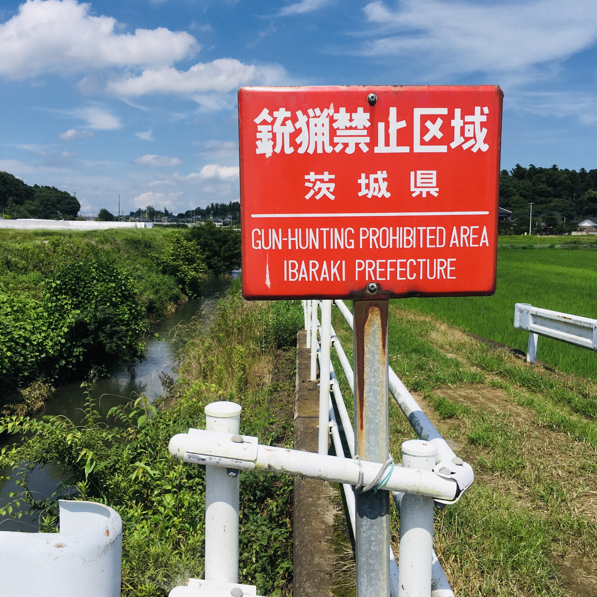

How to get a gun in Japan
Paminsan-minsan, kung mapapadaan ka sa medyo probisyang lugar ng Japan, may mapapansin kang mga sign na ganito.

Para sa mga taong nasanay na na hindi makakita ng baril sa Japan (bawal humawak ng baril pati mga security guard), baka nakakabiglang malaman na pwedeng makakuha ng baril sa Japan.
Pero ang proseso ay napakakumplikado, hindi siguro magandang investment ng oras at pera, puwera na lang kung gusto mong kumain ng sarili mong huli na baboy damo o wild duck.
Ayon sa New York Times, ito ang proseso ng pagkuha ng lisensya ng baril sa Japan.
- Join a hunting or shooting club.
- Take a firearm class and pass a written exam, which is held up to three times a year.
- Get a doctor’s note saying you are mentally fit and do not have a history of drug abuse.
- Apply for a permit to take firing training, which may take up to a month.
- Describe in a police interview why you need a gun.
- Pass a review of your criminal history, gun possession record, employment, involvement with organized crime groups, personal debt and relationships with friends, family and neighbors.
- Apply for a gunpowder permit.
- Take a one-day training class and pass a firing test.
- Obtain a certificate from a gun dealer describing the gun you want.
- Buy a gun safe and an ammunition locker that meet safety regulations.
- Allow the police to inspect your gun storage.
- Pass an additional background review.
- Buy a gun.
Dahil sa ganitong estriktong proseso ng pagkuha ng baril na bunga ng Firearm and Sword Possession Control Law (“No one shall possess a firearm or firearms or a sword or swords."), halos walang namamatay dahil sa baril sa Japan.
Needless to say, hindi ka rin puwedeng maglakad-lakad sa publiko nang may sukbit na katana.